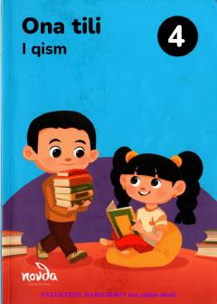

4O4-sinf o'quvchilari uchun ona tili fanidan 1-qism darslik.
Mazkur darslik umumiy o'rta ta'lim maktablarining 4-sinf o'quvchilari uchun mo'ljallangan bo'lib, ona tilidan boshlang'ich bilim va ko'nikmalarni shakllantirishga xizmat qiladi. Kitobda o'quvchilarning nutq va lug'at boyligini oshirish, to'g'ri yozish hamda o'qish qoidalarini o'zlashtirish uchun turli topshiriqlar berilgan.